A three-stage decision chain, evaluated separately at each stage so that a failure in one link cannot hide behind success in another.
The chain answers three questions in sequence. RQ01 asks whether the economy is currently in a financially stressful state and where the stress comes from — domestic, global or both. RQ02 asks whether stress will start, whether it will end, and when the equity market reaches its bottom. RQ03 asks how a six-asset portfolio should be restructured given those signals, and whether the restructuring adds value against five passive benchmarks and a fully invested equity portfolio.
Data. Monthly financial-condition indicators for Belgium, Germany, Spain, Finland, France, Italy and the Netherlands; weekly total-return indices for three equity and two bond groups plus a cash proxy; European Systemic Risk Board stress labels, used only to score the result, never as an input.
Periods. Development runs from July 2005 to December 2019 (1,218 country-months, 800 calm). Evaluation runs from January 2020 to December 2024; labels stop in April 2021, so only 112 of 420 out-of-sample months can be scored. Months without a label are excluded from scoring and are never treated as calm.
Three layers build one binary decision, and they are not equally weighted. Individual signals compare each indicator's standardised level, its three- and twelve-month change and its drawdown with source-specific quantiles, and vote up, down or sideways; a source is flagged strong when its level passes the strong quantile. Joint signals pair two indicators that are observed in the same month and whose movements match a motif, carrying both members' thresholds and the applicable publication lag. Pool integrates what is available and then applies the final rule — a country threshold on the pooled score, one joint confirmation that can only add stress, and one joint confirmation that can only remove it.
| period | TP | FN | FP | TN | FNR | FPR |
|---|---|---|---|---|---|---|
| DEV | 376 | 42 | 194 | 606 | 10.05% | 24.25% |
| OOS | 77 | 14 | 5 | 16 | 15.38% | 23.81% |
The layered structure is not decorative. Keeping only the country threshold lowers the false-alarm rate to 15.00% and raises the miss rate to 5.74%; adding the confirmation pair buys 5.02% miss rate for a much higher false-alarm rate; the exclusion pair then removes 27 alarms and costs 5.03 points of miss rate. The rule behaves as "threshold plus two filters", not as a vote.
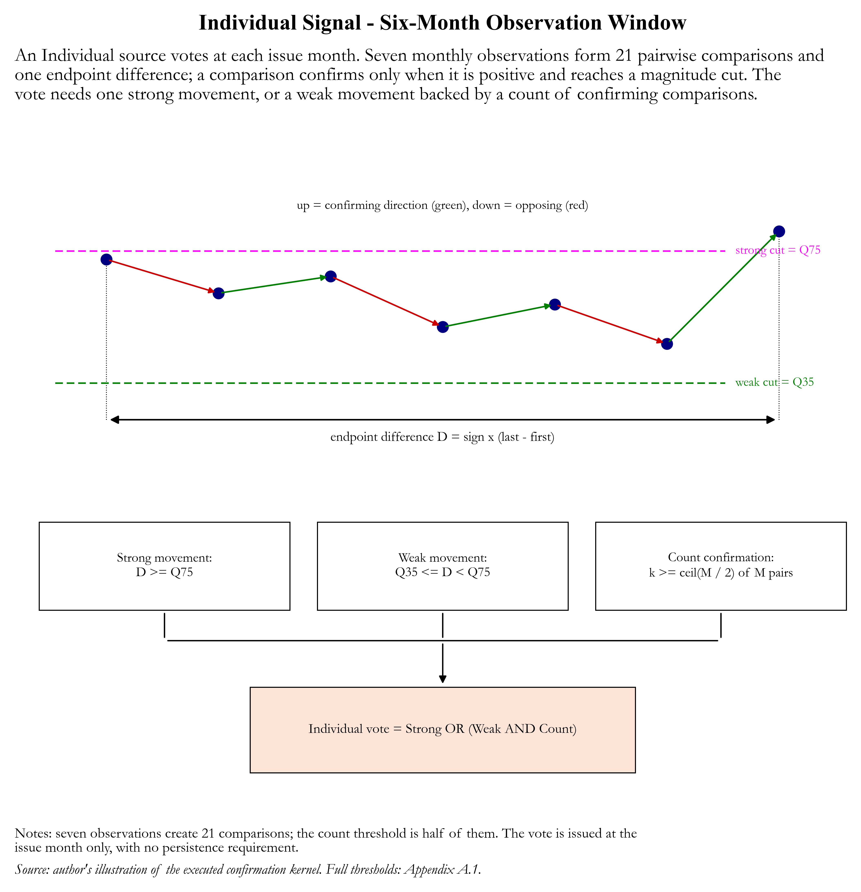
Interpretation. Seven monthly observations create up to 21 pairwise comparisons and one endpoint difference; a comparison confirms only when it is positive and reaches a magnitude cut, and the vote needs one strong movement or a weak movement backed by half of the comparisons.
Limitation. The cuts are percentiles of each country's own prior deltas, so they carry no common unit across indicators.
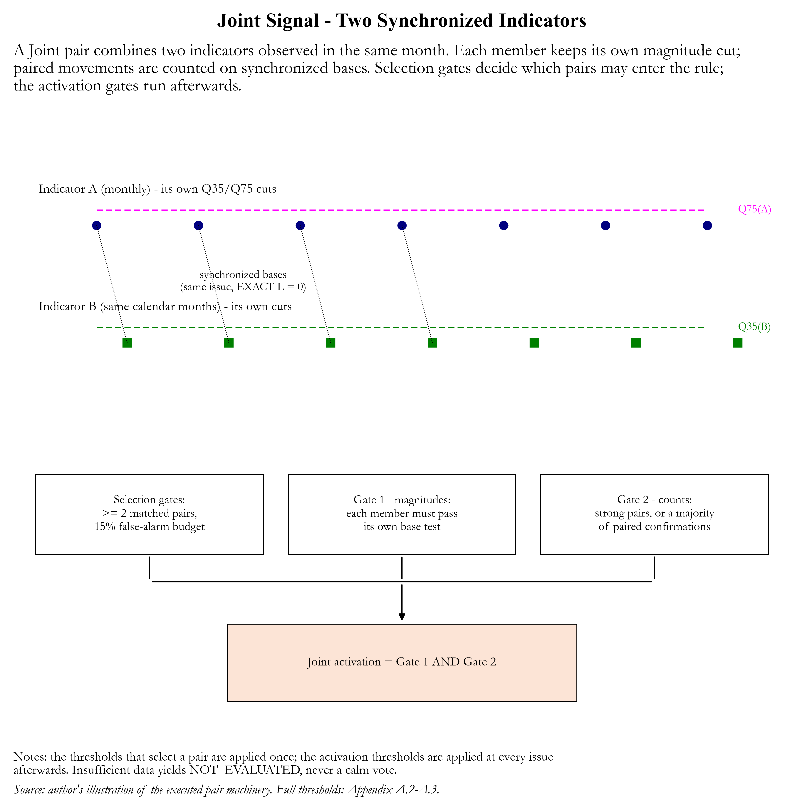
Interpretation. Each member keeps its own magnitude cut; paired movements are counted on synchronized bases with no publication lag. Selection gates are applied once; activation gates run at every issue afterwards.
Limitation. Insufficient data yields NOT_EVALUATED, never a calm vote.
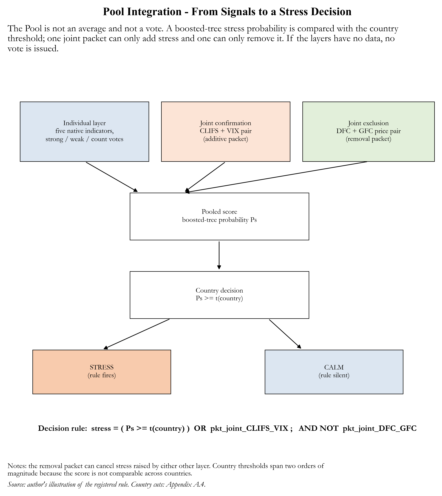
Interpretation. The pool is not an average and not a vote: a boosted-tree probability is compared with the country threshold, one joint packet can only add stress and one can only remove it.
Limitation. The removal packet can cancel stress raised by either other layer.
| variant | TP | FN | FP | TN | FNR | FPR | alarms |
|---|---|---|---|---|---|---|---|
| Individual only (per-country threshold on the pooled score) | 394 | 24 | 120 | 680 | 5.74% | 15.00% | 514 |
| Individual + Joint (pair OR) | 397 | 21 | 200 | 600 | 5.02% | 25.00% | 597 |
| Pool (pair OR, excluded by the negative pair) | 376 | 42 | 194 | 606 | 10.05% | 24.25% | 570 |
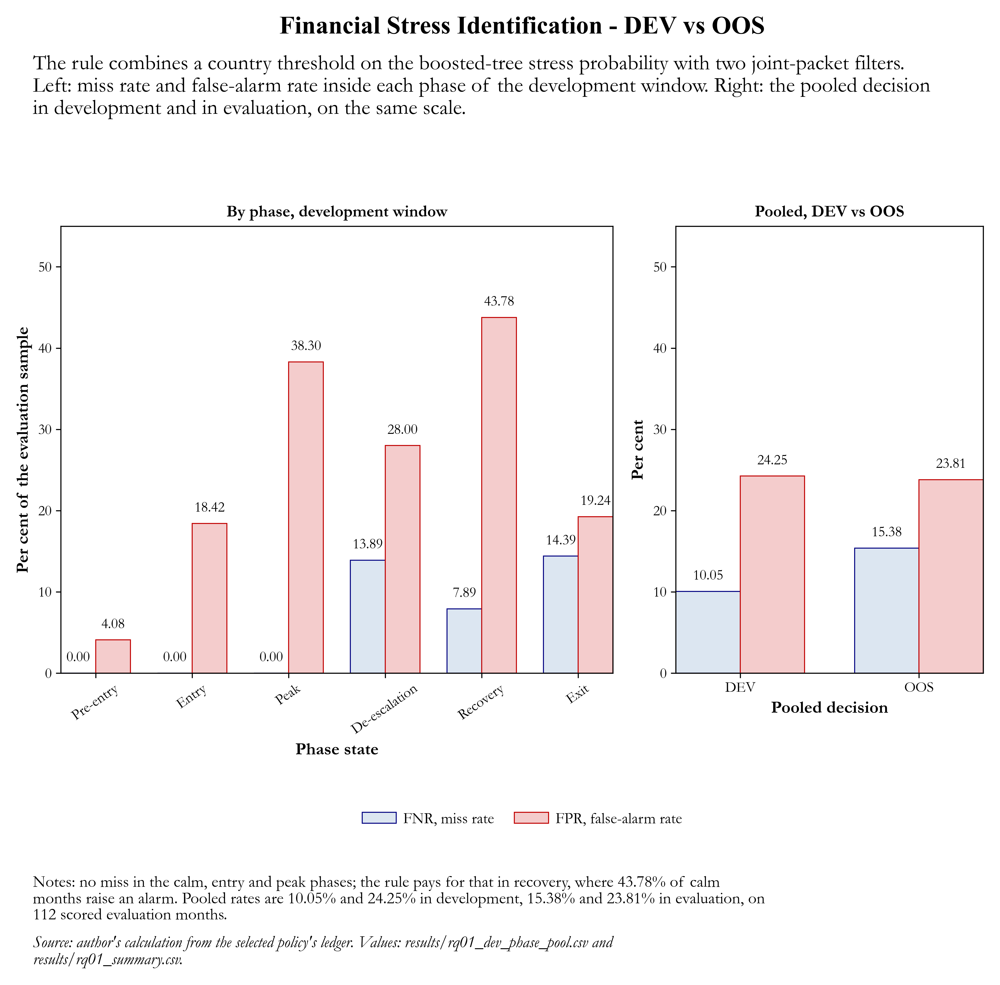
Interpretation. The rule is silent in the calm, entry and peak phases and pays for that silence in recovery, where 43.78% of calm months raise an alarm. The pooled 10.05% and 24.25% average a rule that is either perfectly quiet or strongly over-sensitive.
Limitation. A development-window diagnostic; the out-of-sample score tape needed to repeat it is not part of this release.
The rule is conservative while the economy is calm or entering stress — no misses in the pre-entry, entry and peak phases — and pays for that in recovery, where 43.8% of calm months raise an alarm. Out of sample the false-alarm rate is stable (23.81%) while the miss rate rises to 15.38%: the rule lost sensitivity, not discipline. Only 112 labelled months support that statement, and the per-phase split cannot be reproduced because the out-of-sample score tape is not published here.
Entry asks whether stress starts within a fixed horizon; the horizon ladder runs from 45 down to 18 months and the published operating point uses 18. Exit asks whether the episode ends within three months and adds a duration term, because the probability of exit rises with the age of the episode. The bottom is not a probability model but a zone rule that requires independent factors to agree. In all three, Individual movements are accumulated over the horizon, Joint confirmations are only admitted when both members are published before the issue date, and Pool is the combination actually thresholded. A slow Long system feeds entry; a five-vote Short system, whose last vote is a last-short flag, feeds exit and bottom.
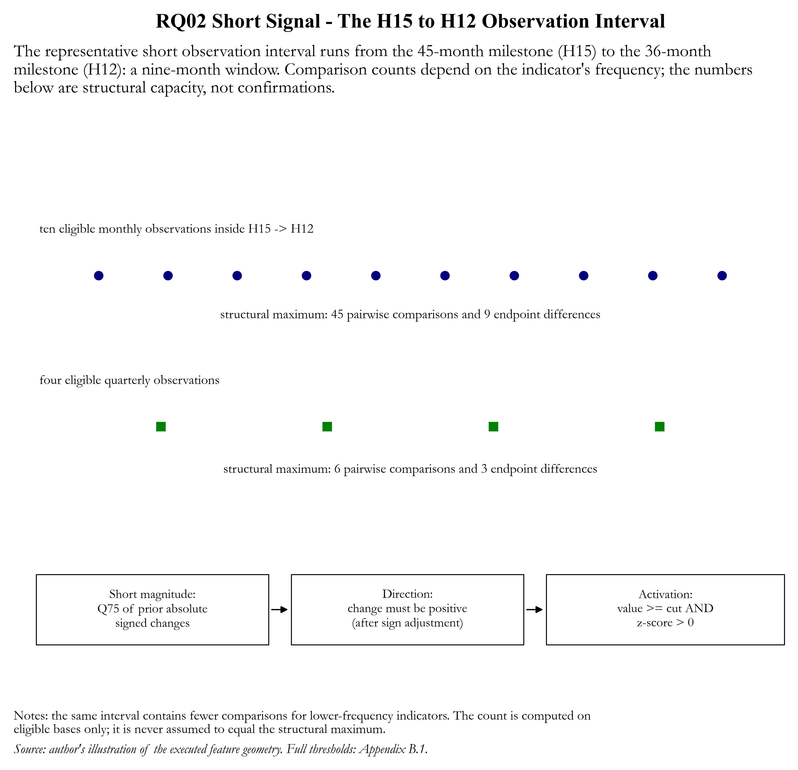
Interpretation. The representative short interval is the nine months between the 45-month and 36-month milestones. The comparison count depends on the indicator's frequency; the numbers shown are structural capacity, not confirmations.
Limitation. The count is computed on eligible bases only.
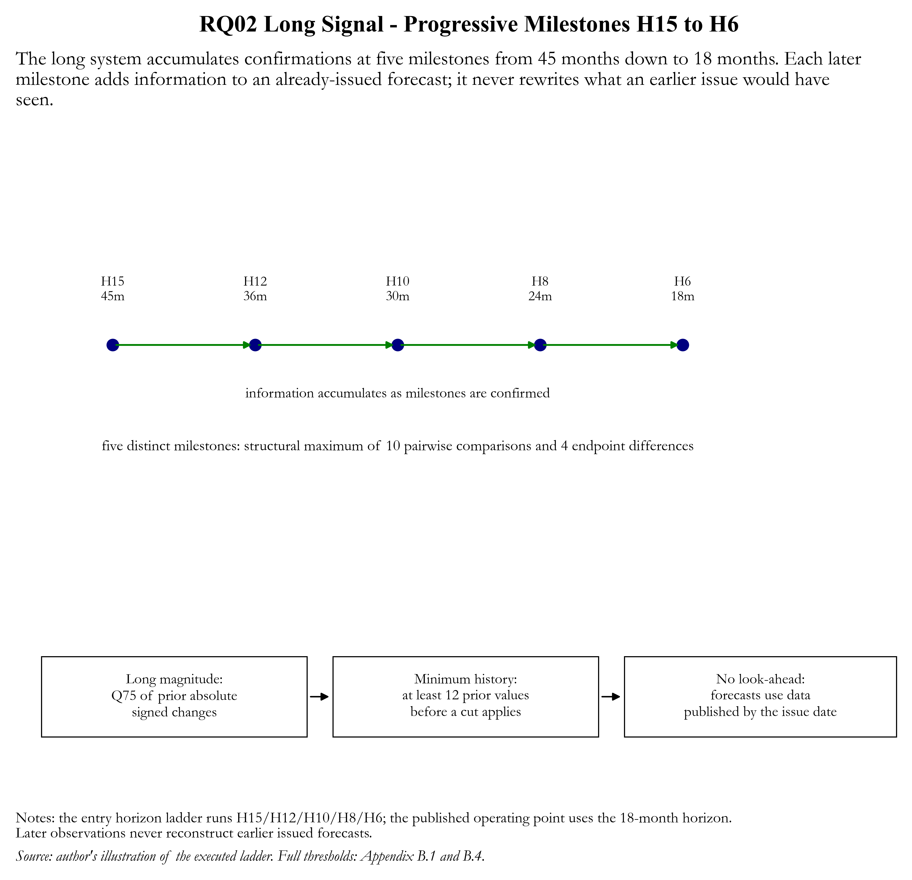
Interpretation. The long system accumulates confirmations at five milestones. Each later milestone adds information to an already-issued forecast; it never rewrites what an earlier issue would have seen.
Limitation. Forecasts use data published by the issue date only.
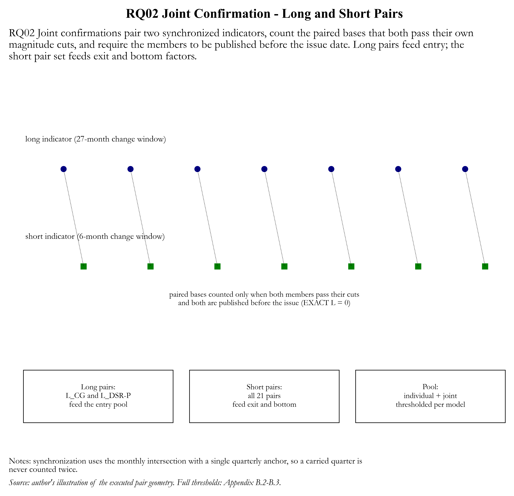
Interpretation. Long pairs feed the entry pool; the short pair set feeds exit and the bottom factors. Paired bases are counted only when both members pass their own cuts and both are published before the issue.
Limitation. A carried quarter is never counted twice.
| task | period | threshold | n | TP | FN | FP | TN | FNR | FPR |
|---|---|---|---|---|---|---|---|---|---|
| ENTRY (18m) | DEV | 0.111821 | 653 | 108 | 0 | 130 | 415 | 0.00% | 23.85% |
| ENTRY (18m) | OOS | 0.111821 | 14 | 12 | 2 | — | — | 14.29% | — |
| EXIT (3m) | DEV | 0.027174 | 418 | 18 | 0 | 87 | 313 | 0.00% | 21.75% |
| EXIT (3m) | OOS | 0.027174 | 91 | 15 | 6 | 32 | 38 | 28.57% | 45.71% |
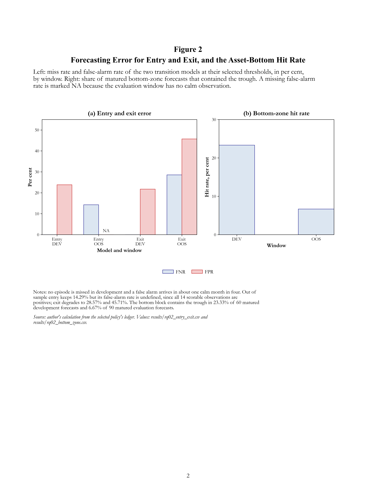
Interpretation. Entry buys its low miss rate with false alarms in development and cannot be scored on false alarms out of sample, where all 14 observations are positives. Exit degrades to 28.57% and 45.71%. The bottom zone keeps the trough inside the zone in one development forecast in four and one evaluation forecast in fifteen.
Limitation. Two of the five rates are undefined rather than zero, and the evaluation block rests on 14, 91 and 90 scorable observations.
Both models are calibrated towards recall: no episode is missed in development, at the cost of a false alarm in roughly one in four calm observations. Out of sample entry keeps a low miss rate (14.29%) but its false-alarm rate cannot be defined — all 14 scorable observations are positives, so an empty denominator is reported as missing, never as zero. Exit degrades on both dimensions (28.57% and 45.71%). The bottom rule hits 14 of 60 matured forecasts in development (23.33%) with a negative median lead time, meaning it identifies the zone but on average after the trough. Out of sample the block is scored: 6 of 90 matured forecasts contained the trough (6.67%), against 14 of 60 (23.33%) in development.
The Main Model is a four-state machine in which the permission to restructure changes with the state. Normal (S1) runs a band allocator: equity centred at 90% inside an 80–100% band driven by the volatility z-score and the stress probability, bonds 0–20%, cash the rest. Stress without a confirmed bottom (S2) withdraws that allocator and holds 50–80% bonds, the remainder in cash, with no equity. Short confirmation is what triggers the lock: between that week and bottom confirmation the portfolio is not re-optimised on new information, which prevents selling into the final decline and buying back higher, at the cost of 596 of 781 development weeks spent in that posture. Bottom confirmation (S3) activates the only fully invested state — equity 100% of NAV, held — after which a profit ladder of four 20% trims at +8%, +16%, +25% and +40%, a four-week cooldown, a 52-week minimum hold and a 10–15% trail returns the portfolio through the post-exit band (S4) to normal, with 26 consecutive normal weeks re-arming the cycle.
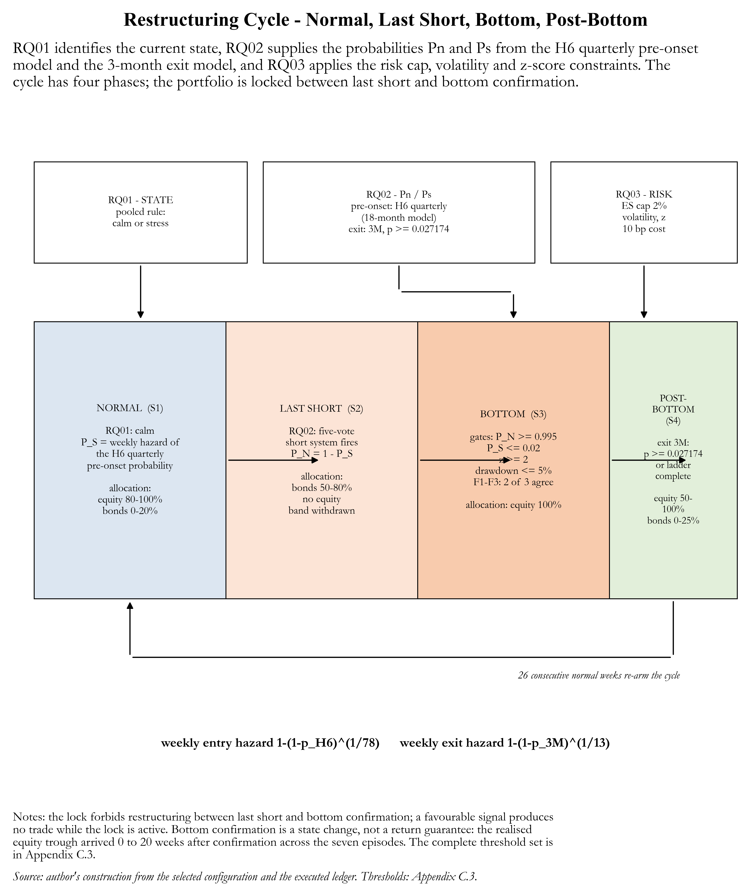
Interpretation. RQ01 identifies the state, RQ02 supplies Pn and Ps from the H6 quarterly pre-onset model and the 3-month exit model, and RQ03 applies the risk cap, volatility and z-score constraints. The portfolio is locked between last short and bottom confirmation, so a favourable signal produces no trade while the lock is active.
Limitation. Bottom confirmation does not guarantee a positive return: the realised equity trough arrived 0 to 20 weeks after the model's confirmation across the seven episodes.
| Phase | RQ01 | RQ02 | RQ03 | Allocation |
|---|---|---|---|---|
| Normal | pooled rule calm | P_S = weekly hazard of the H6 quarterly pre-onset probability | equity band 80-100% | equity 80-100%, bonds 0-20%, cash residual |
| Last short | state persists | five-vote short system fires; P_N = 1 - P_S | lock: band allocator withdrawn | bonds 50-80%, no equity, restructuring prohibited |
| Bottom | state persists | gates P_N >= 0.995, P_S <= 0.02, z >= 2, drawdown <= 5%; F1-F3 two of three | ES cap bypassed in S3 | equity 100%, profit ladder active |
| Post-bottom | state updated | exit 3M p >= 0.027174 or ladder complete | S4 band | equity 50-100%, bonds 0-25%; 26 normal weeks re-arm the cycle |
Chronology check. Measured on the executed ledger, the realised equity trough arrived between 0 and 20 weeks after the model's bottom confirmation across the seven episodes; in 2007-09 and 2022 the confirmation preceded the trough by 18 and 15 weeks. The restructuring lock has lasted between 18 and 300 weeks. Confirmation dates are model-issued decisions; trough dates are retrospective market events.
Four constraints act on every target: a hard weekly expected-shortfall cap of 2%, the state band clamps, a zero floor on cash (so no leverage), and a 10 basis point one-way transaction cost on realised turnover. Two parameters are often assumed to be active and are not: the risk-tolerance scaling table is disabled, and the probability branch of the cycle reset is inert by construction, so the cycle is re-armed by time rather than by a probability condition.
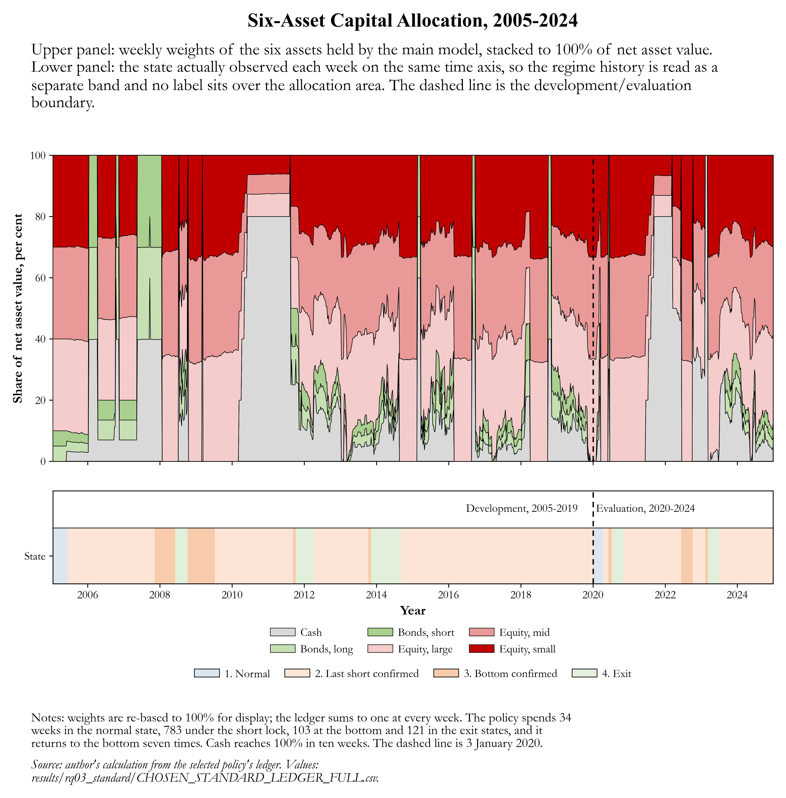
Interpretation. The policy is equity-heavy by design: the three equity sleeves hold about three quarters of NAV for most of the period, cash reaches 100% in ten weeks only, and the regime band shows a cycle rather than a one-way de-risking. The lock accounts for 783 of 1,041 weeks.
Limitation. Weekly weights are re-based to 100% for display, and the band records the states the executed configuration produced.
| Parameter / Threshold | Actual Value | Unit | Class |
|---|---|---|---|
| Allocation engine | four-state state-and-cycle allocator | — | Fixed assumption |
| Normal-state equity target | 0.9 | share of NAV | Calibrated |
| Normal-state bond target | 0.1 | share of NAV | Calibrated |
| Lock-state bond share (base) | 0.65 | share of NAV | Calibrated |
| Lock-state stress tilt | 0.1 | share per unit of P_S | Calibrated |
| Pre-bottom residual split | pro-rata | rule | Fixed assumption |
| Pre-bottom window | 26 | weeks | Calibrated |
| Pre-bottom cooldown | 4 | weeks | Calibrated |
| Pre-bottom stop | 0.1 | return | Calibrated |
| Bottom confirmation: normal probability | 0.995 | probability | Calibrated |
| Bottom confirmation: stress probability | 0.02 | probability | Calibrated |
| Bottom confirmation: volatility z-score | 2 | standard deviations | Calibrated |
| Bottom confirmation: drawdown tolerance | 0.05 | return | Calibrated |
| Bottom-state equity target | 1 | share of NAV | Calibrated |
| Recovery equity cap | 0.8 | share of NAV | Calibrated |
| Recovery normal-probability gate | 0.98 | probability | Calibrated |
| Recovery stress-probability gate | 0.02 | probability | Calibrated |
| State S4 high-volatility response | bonds absorb the shock | rule | Fixed assumption |
| Post-exit equity floor | 0.5 | share of NAV | Calibrated |
| Post-exit bond ceiling | 0.25 | share of NAV | Calibrated |
| Volatility-z direction | risk-off | sign | Fixed assumption |
| Profit-taking ladder | +8% / 20%; +16% / 20%; +25% / 20%; +40% / 20% | gain / share | Calibrated |
| Tranche cooldown | 4 | weeks | Calibrated |
| Minimum holding after the bottom | 52 | weeks | Calibrated |
| Profit trail | 0.1 | drawdown from peak | Calibrated |
| Runner activation | 2 | tranches completed | Calibrated |
| Runner trail | 0.15 | drawdown from peak | Calibrated |
| Profit proceeds destination | on | rule | Fixed assumption |
| Post-bottom equity cap | 1 | share of NAV | Calibrated |
| Post-bottom stop | 0.1 | return | Calibrated |
| Pre-bottom stop | 0.08 | return | Calibrated |
| Stop reference | equal-weight equity basket | rule | Fixed assumption |
| Hard expected-shortfall cap | 0.02 | weekly return | Calibrated |
| Pre-bottom ES overlay | — | rule | Fixed assumption |
| Bottom supplement switch | on | flag | Calibrated |
| Forced bottom entry | off | flag | Fixed assumption |
| Cycle reset window | 26 | weeks | Calibrated |
| Cycle reset normal-probability | 1.01 | probability | Fixed assumption |
| Risk-tolerance scaling | off | flag | Fixed assumption |
| Bottom trigger rule | first confirmed bottom | rule | Fixed assumption |
| Bottom lookback | 0 | weeks | Fixed assumption |
| Bottom ES bypass | on | flag | Fixed assumption |
| Lock-state bond band | 50 – 80 | share of NAV | Calculated |
| Transaction cost | 10 | basis points | Fixed assumption |
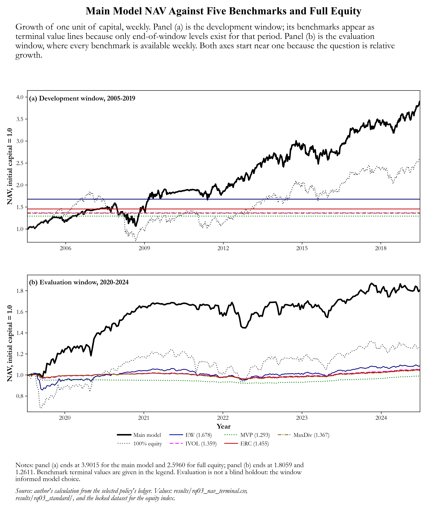
Interpretation. The main model compounds 3.9015 in development and 1.8059 in evaluation, against 2.5960 and 1.2611 for full equity and 1.678/1.087 for equal weights. The gap opens in the drawdowns, where the policy keeps equity and the benchmarks do not.
Limitation. Development benchmarks are terminal values because only end-of-window levels exist; the evaluation window was open when the model was chosen.
| period | weeks | POLICY | EW | IVOL | MVP | ERC | MaxDiv | EQUITY100 |
|---|---|---|---|---|---|---|---|---|
| DEV | 781 | 3.9015 | 1.6784 | 1.3592 | 1.2934 | 1.4548 | 1.3675 | 2.5960 |
| OOS | 260 | 1.8059 | 1.0867 | 1.0515 | 0.9892 | 1.0466 | 1.0417 | 1.2611 |
The model beats all five passive benchmarks and the fully invested equity portfolio in both windows: 3.9015 against 1.2934–1.6784 and 2.5960 in development, 1.8059 against 0.9892–1.0867 and 1.2611 out of sample, compounding to 5.6981 over the continuous path. The premium is paid for with risk: maximum drawdown of 32.84% and 14.30%, and the highest weekly expected shortfall of the six strategies in both windows. This is a return engine with a defensive overlay, not a risk-control device. Benchmarks are passive construction rules and are not subject to the lock.
| strategy | MDD_DEV | MDD_OOS | ES95_DEV | ES95_OOS |
|---|---|---|---|---|
| Main model | 0.3283 | 0.1430 | 0.0452 | 0.0395 |
| EW | 0.1943 | 0.1573 | 0.0198 | 0.0268 |
| IVOL | 0.0498 | 0.0737 | 0.0067 | 0.0091 |
| MVP | 0.0337 | 0.0819 | 0.0045 | 0.0061 |
| ERC | 0.0375 | 0.0597 | 0.0066 | 0.0068 |
| MaxDiv | 0.0342 | 0.0748 | 0.0052 | 0.0072 |
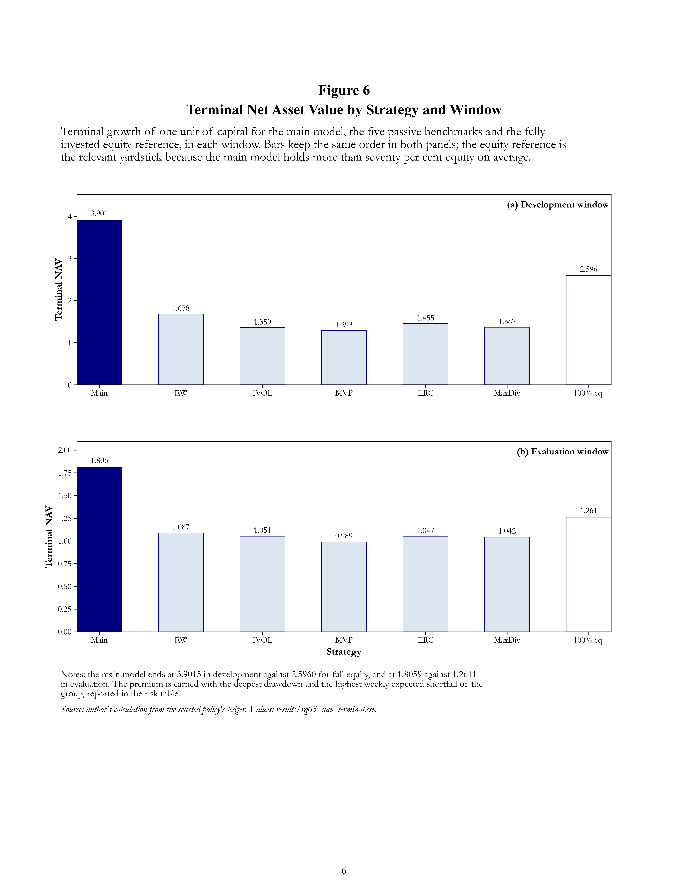
Interpretation. Terminal NAV ranks the main model first in both windows, with full equity second in both and the five passive rules near one.
Limitation. Terminal NAV ignores the path: the premium is earned with the deepest drawdown and the highest weekly expected shortfall of the group.
Identification is the reliable link: 10% miss rate at a 25% false-alarm rate in development, with a stable false-alarm rate out of sample. Forecasting is the weak link: entry survives on the miss dimension but cannot be scored on false alarms, and exit and bottom degrade. Allocation adds value on return and costs value on risk. The lock is the distinctive design choice — refusing to restructure between short confirmation and bottom confirmation is what separates this policy from a band rebalancer. The evidence does not support independent out-of-sample validation, deployment without an owner-approved risk budget, or use of the bottom forecast as a timing signal.
Code, selected thresholds and the exact tables behind every figure are in the repository:
README.md, RAW_CODE/, THRESHOLD/, results/. The dataset is
not redistributed. Costs are fixed at 10 basis points one-way with no market impact, no borrow cost and no liquidity
constraint; the sample covers seven countries and one out-of-sample shock.
Research output, not an investment recommendation.
Every active threshold, rule and parameter used by the three research questions, in the standard form Parameter / Selected value / Unit / Activation condition / Interpretation. Values are copied from the executed configuration or the selected-threshold files and nothing is rounded or inferred. Rows whose rule lives in code cite the file and line. The audit at the end reports every value that could not be traced, every duplicated label and every requested object that is not implemented.
Identification converts five native stress indicators into one binary country-month decision. The registered rule is a country threshold on a boosted-tree probability, one joint confirmation that can only add stress and one that can only remove it.
Confirmation geometry for the five native indicators. The magnitude cuts are percentiles of each country's own prior deltas, so they carry no common unit across indicators.
| Parameter / Rule | Selected value | Unit | Activation condition | Interpretation |
|---|---|---|---|---|
| Observation window | 12 | months | every issue | One latest as-of native level per month; the vote is formed at the issue month |
| Native frequency - CISS / CLIFS / DFC / GFC price / VIX | W / M / Q / M / D | frequency | sampling | Weekly and daily series are sampled; quarterly series are de-duplicated so a quarter is never counted twice |
| Direction of movement | CISS +1, CLIFS +1, DFC -1, GFC price +1, VIX +1 | sign | every delta | D = sign x (level_end - level_base); DFC enters with a reversed sign, so a wider credit spread still means more stress |
| Prior-delta history | deltas before issue minus 11 months; at least 4 | months / count | every issue | Reference distribution for the magnitude cuts; below four prior deltas the source is NOT_EVALUATED |
| Strong magnitude cut (theta_hi) | 75th percentile of prior absolute adjacent deltas | native units | per country x source x issue | An endpoint difference above this cut counts as a strong confirmation |
| Weak magnitude cut (theta_lo) | 35th percentile of prior absolute adjacent deltas | native units | clamped to 0 <= lo <= hi | Lower cut that feeds the count leg of the vote |
| Minimum native levels | 2 | count | every issue | Fewer than two levels cannot produce a delta; the source is flagged N_LT_2_NATIVE_LEVELS |
| Minimum confirming bases | min(2, n-1) | count | strong and weak legs | A leg confirms only when at least this many base pairs pass the magnitude test |
| Confirmation count threshold | max(1, ceil(0.5 x M)), M = n(n-1)/2 | count | count leg | Half of the available base pairs must confirm |
| Magnitude predicate | D > 0 AND D >= cut | rule | each base pair | Equality confirms; a zero difference never confirms |
| Count predicate | signed_count >= count_k | rule | count leg | Counts signed confirming bases only |
| Individual vote | Strong OR (Weak AND Count) | rule | every issue | Single-issue decision with no persistence requirement |
Gates used to decide whether a pair may enter the rule. These are not the thresholds that activate the pair afterwards; activation is in A.3.
| Parameter / Rule | Selected value | Unit | Activation condition | Interpretation |
|---|---|---|---|---|
| Pair roster and motif lag | 10 pairs, 9 ordered motifs, EXACT L = 0, delta = 0 | count / months | pair registry | Only the EXACT(0,0) lag is registered, so no pair may use a future publication |
| Selection gate G1 - matched native pairs | >= 2 | count | pair eligibility | Below two matched native pairs the pair is INELIGIBLE |
| Selection gate G3 - domain check | 1 <= min_bases <= n-1; 0 <= count_k <= M; lo <= hi | rule | pair eligibility | A pair whose count geometry is impossible is BLOCKED |
| Selection gate G4 - false-positive budget | new_fp <= round(0.15 x n_neg); source cap 2; <= 1024 subsets | count | pair selection | Budget that stops a pair from buying true positives with false alarms |
| Per-pair configuration choice | tp_final down, fp_final up, lost_tp up, new_fp up, motif up | lexicographic | one configuration per pair | Deterministic tie-break |
| Selected pairs in the registered rule | OR pkt_joint_CLIFS_VIX; NOT pkt_joint_DFC_GFC | packet flag | registered rule | Two pairs survive selection: one can only add stress, one can only remove it |
Conditions applied to a selected pair at each issue. Magnitudes are member-level percentiles; counts are base-pair counts.
| Parameter / Rule | Selected value | Unit | Activation condition | Interpretation |
|---|---|---|---|---|
| Activation magnitude cuts | high = Q75, low = Q35 per member | native units | selected pair, every issue | The cuts used after selection are the member percentiles, not the selection gates |
| Gate 1 - separate-base magnitude test | PASS if a base has D_a >= gate1_a AND a base has D_b >= gate1_b | rule | member magnitudes | The two members may confirm on different base pairs |
| Gate 2 - paired count test | strong >= min_bases OR (weak >= min_bases AND paired_count >= count_k) | rule | paired bases | A pair needs either strong pairs or a majority of paired confirmations |
| Joint activation | Gate 1 PASS AND Gate 2 PASS | rule | every issue | Either gate failing yields FAIL; insufficient data yields NOT_EVALUATED, never zero |
| Synchronisation | monthly intersection with a single quarterly anchor; >= 2 matched anchors | count | every issue | A carried quarter cannot be double-counted |
How individual and joint layers are combined and the country cuts applied to the pooled score.
| Parameter / Rule | Selected value | Unit | Activation condition | Interpretation |
|---|---|---|---|---|
| Pooled score model | XGBOOST_M01 | model id | every country-month | Boosted-tree probability of a stressed month; the only input to the country threshold |
| Threshold comparison operator | >= | operator | every country-month | Stress is raised when the score is at or above the country threshold |
| Additive joint filter | pkt_joint_CLIFS_VIX | packet flag | both members published before the decision month | Adds stress even when the country threshold is not crossed |
| Exclusion joint filter | pkt_joint_DFC_GFC | packet flag | both members published before the decision month | Removes stress raised by the other two layers (domestic-versus-global divergence) |
| Pool operator | selected pool, else COMPLEMENT_AND_JOINT; IND_ONLY fallback | rule | every issue | Combination of the individual and joint layers |
| Insufficient or conflicting signals | NOT_EVALUATED, no vote; empty complement = FAIL | rule | every issue | Missing evidence is never imputed as calm |
| Country decision threshold - BE | 0.0141416192054748 | probability | Ps_XGB_M01 >= 0.0141416192054748 | Country-specific cut on the pooled score; the only country-level parameter |
| Country decision threshold - DE | 0.013771653175354 | probability | Ps_XGB_M01 >= 0.013771653175354 | Country-specific cut on the pooled score; the only country-level parameter |
| Country decision threshold - ES | 0.0361300110816955 | probability | Ps_XGB_M01 >= 0.0361300110816955 | Country-specific cut on the pooled score; the only country-level parameter |
| Country decision threshold - FI | 0.0125994086265563 | probability | Ps_XGB_M01 >= 0.0125994086265563 | Country-specific cut on the pooled score; the only country-level parameter |
| Country decision threshold - FR | 0.0060475468635559 | probability | Ps_XGB_M01 >= 0.0060475468635559 | Country-specific cut on the pooled score; the only country-level parameter |
| Country decision threshold - IT | 0.0175201892852783 | probability | Ps_XGB_M01 >= 0.0175201892852783 | Country-specific cut on the pooled score; the only country-level parameter |
| Country decision threshold - NL | 0.9851701250299812 | probability | Ps_XGB_M01 >= 0.9851701250299812 | Country-specific cut on the pooled score; the only country-level parameter |
Peak, trough and recovery are phase classifications in the executed code, not probabilities. Percentiles, quorums and persistence are reported as they are implemented.
| Parameter / Rule | Selected value | Unit | Activation condition | Interpretation |
|---|---|---|---|---|
| Normal state definition | pooled decision calm; P_N = 1 - P_S | probability | every issue in the RQ03 overlay | When the pooled rule is calm the overlay sets P_S to the weekly entry hazard 1-(1-p12)^(1/52), so P_N is the probability that stress does not start within the week |
| Stress state definition | pooled decision fires; P_N = weekly exit hazard | probability | every issue in the RQ03 overlay | When the pooled rule fires the overlay sets P_N to the weekly exit hazard 1-(1-p_exit)^(1/13), so P_S is the probability that the episode continues; P_N and P_S are complementary by construction |
| Peak percentile p_E | 0.90 | quantile | phase classification | Peak branch requires a rise above this quantile of the normal-state reference |
| Peak percentile p_P | 0.75 | quantile | phase classification | Peak level test |
| De-escalation percentile p_D | 0.50 | quantile | phase classification | Falling below the median marks de-escalation |
| Recovery percentile p_L | 0.25 | quantile | phase classification | Lower reference of the recovery band |
| Tolerance percentiles p_H / p_X | 0.75 / 0.75 | quantile | phase classification | Exit tolerance band around the phase median |
| Phase quorum - ENTRY / PEAK / DE-ESCALATION / RECOVERY / EXIT | 3 / 2 / 2 / 3 / 3 | votes of 5 | every issue | K-of-5 bound rule: three bounds must agree for entry, recovery and exit, two for peak and de-escalation |
| Phase persistence | 2 | consecutive issues | every phase change | A phase is confirmed only when it repeats |
| Peak / Trough / Recovery as probabilities | not implemented | probability | requested probabilistic states | The executed path classifies phases by quantile, quorum and persistence. It emits no peak, trough or recovery probability and the three are not a distribution |
Forecasting asks three questions: whether stress starts, whether it ends and when the equity market reaches its bottom. Entry and exit are thresholded probabilities; the bottom is a zone rule.
Long-horizon features feed entry; short-horizon features feed exit and the bottom rule.
| Parameter / Rule | Selected value | Unit | Activation condition | Interpretation |
|---|---|---|---|---|
| Long-horizon change window | 27 | months | entry features | Signed change over 27 months, z-scaled |
| Short-horizon change window | 6 | months | exit and bottom features | Signed change over 6 months, z-scaled |
| Long / short magnitude threshold | Q75 of strictly prior absolute values, at least 12 priors | z units | every issue | A movement activates only when it exceeds the prior 75th percentile and is positive |
| Long pair set | L_CG and L_DSR-P | pair id | entry features | The two long-horizon confirmation pairs |
| Short pair set | all 21 short pairs | count | exit and bottom features | Complete short-horizon pair set |
The five-vote short system and the last-short flag that feeds the allocation stage.
| Parameter / Rule | Selected value | Unit | Activation condition | Interpretation |
|---|---|---|---|---|
| Short-system vote count | 5 | votes | every issue | Five independent votes must agree before the last-short flag is issued |
| Short-system proxy trigger | n_short_sources >= 4 AND n_short_pairs >= 5 | count | every issue | Transition-based trigger, not a level threshold |
| Last-short flag age | <= 18 | months | after the proxy trigger | The flag stays valid for eighteen months and is the input to the RQ03 lock |
| S5 vote universe | EW, IVOL, MVP, ERC, MaxDiv | portfolio | every issue | Five portfolio votes, three tail measures each, 30 series in total |
| S5 tail parameters | alpha 0.95 / 0.975 / 0.99; EWMA lambda 0.94; lookback 52 | level / weight / weeks | every issue | Peak detection uses the first argmax inside (H6, T] |
Registered operating points are reported next to the selection rule the executed path actually uses.
| Parameter / Rule | Selected value | Unit | Activation condition | Interpretation |
|---|---|---|---|---|
| Registered entry model | M11_LOGISTIC_L2_STRONG | model id | reported operating point | Logistic L2 model on the long-horizon confirmation set |
| Registered entry horizon | 18 | months | reported operating point | Forecast window of the entry question (H6 = 18 months) |
| Registered entry threshold | 0.111821 | probability | p_entry >= 0.111821 | Reported out-of-sample operating point |
| Horizon-register threshold - H15 | 0.3196694994575123 | probability | p >= 0.3196694994575123 | Registered threshold for that horizon in the ladder; only H6 is used by the registered entry point |
| Horizon-register threshold - H12 | 0.2214215326280583 | probability | p >= 0.2214215326280583 | Registered threshold for that horizon in the ladder; only H6 is used by the registered entry point |
| Horizon-register threshold - H10 | 0.2166420964185038 | probability | p >= 0.2166420964185038 | Registered threshold for that horizon in the ladder; only H6 is used by the registered entry point |
| Horizon-register threshold - H8 | 0.1883593300131536 | probability | p >= 0.1883593300131536 | Registered threshold for that horizon in the ladder; only H6 is used by the registered entry point |
| Horizon-register threshold - H6 | 0.1594707667685234 | probability | p >= 0.1594707667685234 | Registered threshold for that horizon in the ladder; only H6 is used by the registered entry point |
| Executed entry horizon ladder | H15 / H12 / H10 / H8 / H6 = 45 / 36 / 30 / 24 / 18 | months | entry training | Four model families are fitted at each horizon |
| Executed entry selection rule | feasible if FNR < 0.10 and FPR < 0.20; then min FN, then min FP | rate | threshold search | Operating point chosen inside the feasible set |
Registered and executed exit operating points, including Exit-A and Exit-B.
| Parameter / Rule | Selected value | Unit | Activation condition | Interpretation |
|---|---|---|---|---|
| Registered exit model | LOGISTIC_L2_STRONG_PLUS_DURATION | model id | reported operating point | Logistic L2 model plus a duration term |
| Registered exit horizon | 3 | months | reported operating point | Forecast window of the exit question |
| Registered exit threshold | 0.027174 | probability | p_exit >= 0.027174 | Reported operating point, also used by the RQ03 phase overlay |
| Executed exit horizons | 3 / 6 / 12 / 18 | months | exit training | Exit is fitted at four horizons; the phase overlay uses three months |
| Executed exit selection rule | feasible if FNR < 0.05 and FPR < 0.15; 0.5 confusion weight | rate | threshold search | Operating point chosen inside the feasible set |
| Exit-A and Exit-B | B = A + stacked RQ01 probability | model | exit models | Two exit models exist; the bridge that would score Exit-B is never called, so B is NOT_EVALUATED |
Three independent factors, a two-of-three vote and an ex-post truth window.
| Parameter / Rule | Selected value | Unit | Activation condition | Interpretation |
|---|---|---|---|---|
| F1 - credit and stress level | ddCLIFS <= -0.15 AND zCISS >= 0.5, OR phase in {PEAK, DE-ESCALATION, RECOVERY} | level / z / phase | every issue | First of three independent bottom factors; the two branches are joined by OR |
| F2 - peer cooling | >= 2 of 6 peer countries in cooling phases | count | every issue | The own country is excluded from the peer set |
| F3 - volatility compression | sigma13 < sigma52 AND 4-week return > 0, at least 53 levels | vol / return / weeks | per asset E1, E2, E3, B1, B2 | Third factor, computed separately for each asset |
| Bottom vote and zone | F1 + F2 + F3 >= 2; zone L < U <= issue + 3 months | count / months | every issue | Two of three factors must agree before a bottom zone is issued |
| Bottom evaluation timing | issue = episode start + 3 months; truth = normal + 6 months, capped at the development end | months | evaluation only | The truth window is defined ex post, so the scored hit rate is not a trading signal |
Allocation is a four-state policy. The Main Model is compared with five passive benchmarks built from the same six assets and with a fully invested equity portfolio.
Tail limits, feasibility and trading assumptions of the executed policy.
| Parameter / Rule | Selected value | Unit | Activation condition | Interpretation |
|---|---|---|---|---|
| Allocation engine | four-state state-and-cycle allocator | — | always | State-and-cycle allocator: four states, each with its own weight rule |
| Normal-state equity target | 0.9 | share of NAV | state S1 (no lock, no bottom) | Sets the core equity weight; the rest of S1 is bonds |
| Normal-state bond target | 0.1 | share of NAV | state S1 | Bond sleeve B1/B2 split equally; cash is the residual |
| Lock-state bond share (base) | 0.65 | share of NAV | state S2 (short confirmed, bottom not yet confirmed) | Bond share of the locked portfolio at neutral probabilities |
| Lock-state stress tilt | 0.1 | share per unit of P_S | state S2 | Raises the bond share as the stress probability rises, inside a 50-80% band |
| State S4 high-volatility response | bonds absorb the shock | rule | state S4 with elevated z | S4 absorbs the shock through bonds rather than cash |
| Volatility-z direction | risk-off | sign | states S1 and S4 | Risk-off mapping: a higher volatility z-score lowers equity; no contrarian inversion is used |
| Post-bottom equity cap | 1 | share of NAV | states S3/S4 | Hard ceiling on equity once the bottom has been confirmed |
| Hard expected-shortfall cap | 0.02 | weekly return | every rebalance | Shrinks the target until the historical weekly ES is below the cap |
| Risk-tolerance scaling | off | flag | every rebalance | Disabled: the alpha/ES tolerance table is not applied to size |
| Bottom trigger rule | first confirmed bottom | rule | state S3 | ANY: the first confirmed bottom starts the bottom state |
| Bottom ES bypass | on | flag | state S3 | The hard ES cap is not applied inside the bottom state |
| Lock-state bond band | 50 - 80 | share of NAV | state S2 | Bond share is clamped to 50-80%; the complement is cash |
| Transaction cost | 10 | basis points | on every traded notional | One-way cost charged on realised turnover |
The five passive rules, their constraints and the relative band that was requested but not implemented.
| Parameter / Rule | Selected value | Unit | Activation condition | Interpretation |
|---|---|---|---|---|
| EW - base allocation rule | Equal weight | rule | every weekly rebalance | v_i = 1/5 inside the risky sleeve; long-only and fully invested across the five risky sleeves |
| IVOL - base allocation rule | Inverse volatility | rule | every weekly rebalance | v_i proportional to 1/sigma_i, SAMPLE_DEV estimator; long-only and fully invested across the five risky sleeves |
| MVP - base allocation rule | Minimum variance | rule | every weekly rebalance | argmin v'Av on the simplex, active-set and KKT; long-only and fully invested across the five risky sleeves |
| ERC - base allocation rule | Equal risk contribution | rule | every weekly rebalance | RC_i = 1/5 by Newton iteration; long-only and fully invested across the five risky sleeves |
| MaxDiv - base allocation rule | Maximum diversification | rule | every weekly rebalance | max sigma'v / sqrt(v'Av); long-only and fully invested across the five risky sleeves |
| Benchmark risk limits | none | limit | not part of the benchmark rule | The five benchmarks carry no VaR or ES cap and no state-dependent tolerance; the Main Model cap does not apply to them |
| Benchmark weight constraints | simplex | constraint | every rebalance | w >= 0 and sum(w) = 1; no per-asset cap and no relative band |
| Benchmark rebalancing and cost | weekly, 10 bp one-way | frequency / bps | weekly issue | Full re-solve to the exact target each week on the same cost schedule |
| Relative allocation band around base weights | not implemented | percentage points | requested +/-5 pp band | No such band exists in the executed or adapter code; the only 5 pp object is a research grid step |
State targets, gates, the profit ladder and the cycle reset.
| Parameter / Rule | Selected value | Unit | Activation condition | Interpretation |
|---|---|---|---|---|
| Pre-bottom residual split | pro-rata | rule | state S2 when the pre-bottom supplement is active | Residual after equity is split pro-rata between bonds and cash (65% to bonds) |
| Pre-bottom window | 26 | weeks | state S2 supplement active | Caps how long the early-equity supplement may stay on |
| Pre-bottom cooldown | 4 | weeks | after a pre-bottom exit | Blocks immediate re-entry into the supplement |
| Pre-bottom stop | 0.1 | return | supplement active | Cuts the supplement when its own equity basket falls by this much |
| Bottom confirmation: normal probability | 0.995 | probability | state S2 | One of the four gates that must all hold before bottom equity is deployed |
| Bottom confirmation: stress probability | 0.02 | probability | state S2 | Stress must have collapsed to this level |
| Bottom confirmation: volatility z-score | 2 | standard deviations | state S2 | Deep-drawdown regime required before full equity is bought |
| Bottom confirmation: drawdown tolerance | 0.05 | return | state S2 | Maximum remaining distance to the running peak accepted at confirmation |
| Bottom-state equity target | 1 | share of NAV | state S3 (bottom confirmed) | Moves the portfolio to a fully invested equity position |
| Recovery equity cap | 0.8 | share of NAV | post-bottom recovery path | Intermediate equity level when the cycle has not been reset |
| Recovery normal-probability gate | 0.98 | probability | recovery path | Normal probability required to leave the recovery allocation |
| Recovery stress-probability gate | 0.02 | probability | recovery path | Stress probability required to leave the recovery allocation |
| Post-exit equity floor | 0.5 | share of NAV | states S4 | Lowest equity weight the band can produce after a completed cycle |
| Post-exit bond ceiling | 0.25 | share of NAV | states S4 | Upper bound of the bond band in the post-exit state |
| Profit-taking ladder | +8% / 20%; +16% / 20%; +25% / 20%; +40% / 20% | gain / share | bottom position held | Four trim steps of 20% each at +8%, +16%, +25% and +40% |
| Tranche cooldown | 4 | weeks | between two trims | Prevents trimming twice in consecutive weeks |
| Minimum holding after the bottom | 52 | weeks | bottom position held | Keeps the bottom exposure for a full year before the ladder completes |
| Profit trail | 0.1 | drawdown from peak | after the ladder | Closes the residual position when it retraces this far |
| Runner activation | 2 | tranches completed | after the ladder | Number of completed trims after which a runner is kept |
| Runner trail | 0.15 | drawdown from peak | runner active | Wider trail applied only to the runner |
| Profit proceeds destination | on | rule | on every trim | Proceeds go to cash, not to bonds |
| Post-bottom stop | 0.1 | return | states S3/S4 | Stops the position if it falls this far from entry |
| Pre-bottom stop | 0.08 | return | states S1/S2 | General stop applied to the equity sleeve before the bottom |
| Stop reference | equal-weight equity basket | rule | whenever a stop applies | Stop is measured on the equal-weight equity basket, not on NAV |
| Pre-bottom ES overlay | — | rule | supplement active | NONE: the pre-bottom supplement is not additionally ES-constrained |
| Bottom supplement switch | on | flag | states S2/S4 | Enables the bottom-specific supplement that allows equity before confirmation |
| Forced bottom entry | off | flag | state S2 | Disabled; the bottom is only traded on confirmation |
| Cycle reset window | 26 | weeks | after a completed cycle | Consecutive normal-state weeks required to re-arm the bottom supplement |
| Cycle reset normal-probability | 1.01 | probability | after a completed cycle | Set above 1, so the probability branch never triggers and the reset is inert |
| Bottom lookback | 0 | weeks | state S3 | Zero: the tail trigger uses the whole available history |
Across the 1041 weeks of the full period the policy spends 34 weeks in the normal state, 783 under the lock, 103 at the bottom across 7 bottom episodes, and 121 in the exit states, grouped into 5 lock-to-exit cycles. The dates are model-issued confirmations; the price events behind them are observed, the dates are decisions. The aligned six-asset chart is the exhibit 'Six-Asset Capital Allocation, 2005-2024' in the RQ03 section.
| Episode | Short confirmed (model date) | Bottom confirmed (model date) | Exit recorded | Weeks locked and at the bottom |
|---|---|---|---|---|
| 1 | 2005-06-10 | 2007-11-09 | 2008-06-06 | 157 |
| 2 | 2009-07-10 | 2011-09-09 | 2011-10-07 | 118 |
| 3 | 2012-04-06 | 2013-10-11 | 2013-11-08 | 84 |
| 4 | 2014-09-05 | 2020-06-05 | 2020-07-10 | 306 |
| 5 | 2020-11-06 | 2023-02-10 | 2023-03-10 | 123 |
130 rows are published: 62 traced to a code line, 68 traced to a selected-configuration file, 0 unverified.
| Id | Area | Severity | Finding | Action |
|---|---|---|---|---|
| D1 | RQ03 | high | The executed allocation engine (W16_S4BOT_Z2) is not part of this repository. The overlay module points to an owner hand-off tree, so the RQ03 numbers are traceable to the selected configuration dump and to the executed ledger columns, not to shipped source. | Ship the engine with the next release, or treat the parameter table as the authoritative record. |
| D2 | RQ03 | high | Two rows share the label 'Pre-bottom stop' with different values (0.10 and 0.08): one governs the pre-bottom supplement, the other the general equity sleeve. | Rename both rows so that each stop names the sleeve it protects. |
| D3 | RQ03 | medium | The adapter contract sets a risky-share envelope of 0.50-0.75, while the executed policy holds 0.90 equity in S1 and 1.00 in S3. The adapter is not the executed allocator. | Scope the adapter envelope to the research branch or remove it from the public tree. |
| D4 | RQ03 | medium | The requested +/-5 percentage-point band around each benchmark's base weights is not implemented. The only 5 pp object in the code is a capital-grid step used by a research audit. | State that benchmarks re-solve to their exact shape each week. |
| D5 | RQ03 | medium | The 2% weekly expected-shortfall cap cannot be reproduced from the ledger: the recording column is empty and three weeks are flagged as bottom-state bypass violations. | Recompute the cap from the engine and re-publish the ledger flag. |
| D6 | RQ03 | medium | VaR override triggers (95th and 99th percentile flags that push equity to 1.00) exist only as ledger outputs; their threshold values are not in the repository. | Publish the override thresholds or drop the claim that the rule is documented. |
| D7 | RQ03 | low | The cycle-reset probability gate is 1.01, above the maximum of a probability; the branch can never fire, so the cycle is re-armed by the 26-week clock alone. | Keep the window and label the probability branch inert. |
| D8 | RQ02 | low | The horizon register lists 0.1594707667685234 for H6, while the registered entry point is 0.111821 for a different model (M11). Both are correct for their own model; the register is not the selected threshold. | Keep both labelled by model so they are never read as one number. |
| D9 | RQ03 | low | The RQ03 selected-threshold bundle has no chosen_standard block although the loader expects one. | Add the block or relax the loader with an explicit message. |
| D10 | RQ01 | high | The registered identification rule cannot be computed from the tape shipped here: the columns Ps_XGB_M01, pkt_joint_CLIFS_VIX and pkt_joint_DFC_GFC are absent, so the fidelity check returns NOT_COMPUTABLE_IN_THIS_PIPELINE. The published DEV and OOS confusion comes from the owner register, not from a run a reader can repeat. | Ship the score tape or publish the rule as a registered, non-reproducible result. |
| D11 | RQ01 | high | Peak, Trough and Recovery are phase classifications (percentile, quorum, persistence), not probabilities. No probability threshold exists for them and the three are not a distribution. | Describe them as phases; do not report a peak or recovery probability. |
| D12 | RQ02 | high | The registered entry point (M11, 0.111821) and exit point (0.027174) are echoed by the loader but are not consumed by the executed RQ02 path, which selects its own thresholds under FNR/FPR constraints. | Label the registered points as reported operating points and show the executed rule beside them. |
| D13 | RQ02 | medium | Exit-B is implemented but its specification bridge is never called; the run writes NOT_EVALUATED. | Report Exit-B as not evaluated rather than as a result. |
| D14 | RQ02 | medium | The module rev363/rq02_next.py raises PermissionError before any computation, so the published RQ02 numbers must come from rev363/rq02.py. | Remove the blocked module or mark it as a guard. |